In this chapter we cover the most important concepts to understand how computer networks work. You will learn how computing architectures have evolved over time and how we got to the current model of computing. You will also become familiar with the components of a network and apply this knowledge to the most important network of all: the Internet. Specifically, this chapter will help you to:
Up to this point we have developed a solid understanding of foundational hardware and software concepts. The combination of hardware and software yields a standalone digital computer. While standalone computers dominated the early decades of the information age, the emergence of computer networking unleashed much of the power that underpins modern digital computing. To be a sophisticated end-user you must master the foundational concepts to understand computer networking. The good news is that, as with hardware and software discussed in previous chapters, technology is constantly changing but there are a few unchanging concepts that underpin computer networking. Let’s master them here and now.
According to the dictionary, the word architecture means: "the complex or carefully designed structure of something." With the term computing architecture we refer to the arrangement of hardware and software elements that enable computation. In the previous chapter, we introduced the logical structure of software applications. We showed that the logical design of any software application must include a presentation layer, a logic layer and a data management layer. At that time, we assumed that these three elements would reside in a monolithic application, for example Microsoft Word, installed on your personal computer. In this chapter we show you that this is not always necessary.
Mainframes and Terminals
As you know from the hardware chapter, early computers did not fit in your pocket. In fact, they generally took up rooms, with the CPU being housed in large cabinets referred to as “main frames.” The term stuck and to this day a large digital computer supporting multiple users and multiple peripherals is called a mainframe. Mainframes are expensive, they support hundreds of simultaneous users and are used by organizations that require high performance computing, such as research centers, governments, large corporations and universities. But how do all these users access the mainframe? They use terminals or, as they were called without much grace early on, “dumb terminals.” In this context, a terminal is essentially an input/output device with no processing power used exclusively to access a mainframe. The lack of a local CPU is what characterized terminals as “dumb,” they are not Von Neumann machines since they don't have the five components.
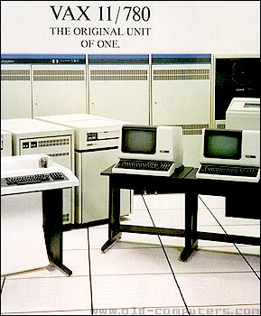
Today if you are using your powerful personal computer to access a mainframe, you are not using local processing power and your computer is simply acting like a terminal. In fact, if you have a Mac, the software program you use to connect is aptly called “terminal” and its icon resembles an old terminal screen (see if you can find it, launch it, and play with it). So, where would the three elements of any software application you wanted to use have to reside? On the mainframe, of course. The terminals have no computational ability and cannot execute any instruction. Since all computation is centralized in the mainframe, we call this a centralized architecture.
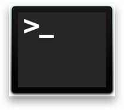
Standalone Personal Computing
What would you call the opposite of a centralized architecture? A distributed architecture, of course! But what would it look like? If in a centralized architecture you had one machine able to perform computations, the mainframe, accessed by many input/output devices, the terminals, in a distributed architecture those terminals would have to be able to perform their own computations. This happened when Apple, and later IBM, began to mass-produce and sell personal computers in the 1980s. Personal computers are full-fledged Von Neumann machines with their own CPU. Thus, they are able to execute instructions and run software applications independently.
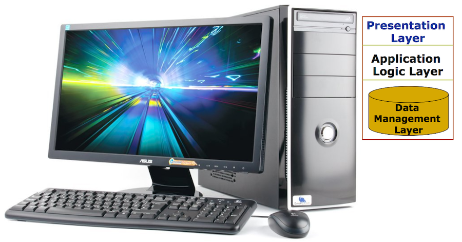
As Moore’s Law continued relentlessly to improve the computational power of microchips and the cost of computers plunged, Microsoft introduced the dominant software application of the modern era: Microsoft Office. Their vision of “a computer on every desk and in every home, running Microsoft software” was becoming a reality. While these machines where not connected to a computer network, it did not matter, as they could run their own software programs. A computer network however offered many advantages, even in a distributed computing environment. A network enables sharing - for example the sharing of data. With standalone computers if a coworker needed to give you a file she would have to put it on a portable storage medium, like a floppy disk, and physically bring it to you. More importantly, the network enabled resource sharing. Co-workers in an office would be able to share a printer, or storage space. As these “islands of computing” became increasingly interconnected, software architects realized that there was a lot of unused computational power on the network. In fact, the boss may have the most powerful computer on his desk, but that computer was often sitting there idle. Thinking of processing power as just another resource that could be shared on the network introduced the shared processing architecture.
The Client-Server Model
Shared processing, or the client server model as it is generally called, is based on the idea of letting two or more machines share the load of executing the instructions in a software application. In other words, different computers execute the three elements of the same software application, not one machine as in the previous architectures (i.e., the mainframe or the personal computer). You intuitively understand that the client-server model enables the optimization of computations across the network as a whole, rather than for each machine independently. The first implementation of such an approach entails separating the presentation layer from the logic and data management layer. What would be the advantage of doing so? If you have been carefully reading this book you can probably guess. If the local machine, a personal computer, executed the instructions to render and manage the user interface, it has enough power to run a Graphical User Interface (GUI). However, by accessing a remote logic and data management layer over the network, the application can use centralized, easily sharable data.
Let’s think of a very practical example. Think about one of the dominant online travel agency in the US: Expedia, Inc. Think back about the very first time you shopped for travel on Expedia. Probably you did so on a personal computer, not through a mobile app. If you have never done it, go do it now on their web page. Expedia, launched on October 22, 1996 – if you were not yet borne please don’t tell me, I’d feel really old! But how did Expedia have access to airline and hotel inventory? When it launched, and until recently, the firm connected to one of the four Global Distribution Systems (GDS) called Worldspan.
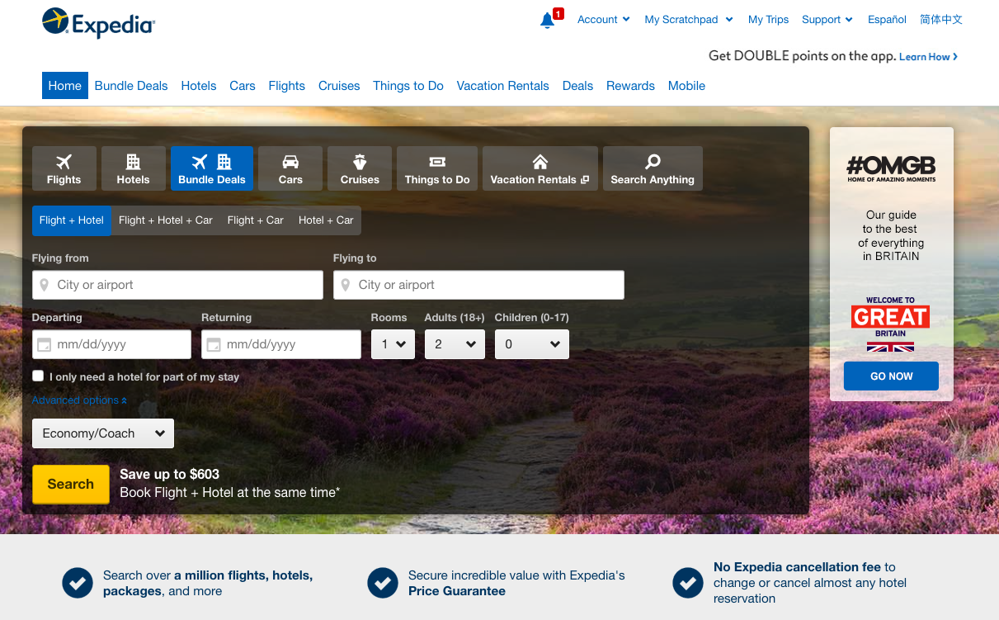
Without the client-server model as an option, Expedia would never have succeeded as a consumer business. No traveler in 1996 would have the time or interest to learn special command line interface codes to access the GDS and make their own travel reservation. But the ability to split the application, and let the local computer run the presentation layer, enabled Expedia to provide a simple user interface for travelers, while still allowing them to use all the search features of the GDS (thanks to the centralized logic layer) as well as accurate airline and hotel inventory data (thanks to the centralized data management layer).
The client-server model introduced two terms that are very familiar to you: client and server. In this context, a client is any software program that can make structured requests to a server in order to access resources that the server makes available. A server is a software program that makes resources available to clients. These definitions may surprise you. The reason is that you may imagine hardware, not software, when thinking of clients and servers. That’s formally incorrect, and even though it is common colloquially to not make the distinction, you need to be clear on the difference. The proof is simple, on the same hardware (your personal computer or your smartphone) you have multiple clients running at the same time. You are probably running an email client (e.g., Microsoft Outlook), a Web client (e.g., Google Chrome), a streaming media client (e.g., Apple Music). On the same hardware in fact you may be running some servers as well. When I was a PhD student, I used the desktop machine sitting on my office desk to check my email (i.e., it ran an email client). However, that same machine ran a web server, accessible all over the world, that hosted my personal website as well as an application for people to learn Microsoft Office through online tutorials – that was 15 years before Coursera was even launched! Clearly if the terms client and server referred to hardware, the above scenarios would be impossible.
As you can imagine there are many different instantiations of the client-server model. If you decide to make a career for yourself in Information Systems you will learn them. For the purpose of this class you should be familiar with two very popular client-server designs: the three-tier architecture and the peer-to-peer architecture.
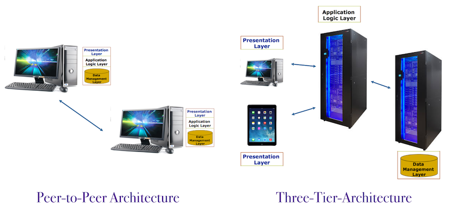
In the three-tiers client-server architecture, each element of the application runs on a different entity. There is a client, running the presentation layer, an application server, running the logic layer and a database server, running the data management layer.
In the peer-to-peer architecture, each peer makes a portion of its resources, such as processing power, directly available to other machines on the network without the need for central coordination. Each peer is both a client and a server for other peers. The peer-to-peer model was popularized by mp3 and file sharing applications and it is today at the heart of sharing networks such as bit torrent.
Cloud Computing
Cloud computing, named after the icon traditionally used to diagram the telecommunication network, uses the Internet to pool IT resources. In other words, applications, computational or storage components—the building blocks of IT solutions—“reside online” and are accessed by clients through the Internet infrastructure. You can think of the cloud computing architecture as an extension of the client-server model.
Consider Dropbox, a service you surely have used in the past. Dropbox provides users with cloud storage capacity to back up, store, and share files, similar to One Drive or Google Drive. Until recently, Dropbox was running and offering its service as a cloud solution based on Amazon’s infrastructure—yes, the same Amazon that sells books! Streaming services like Netflix or Spotify, social services like Reddit, or companies like Airbnb are all running on Amazon’s servers. This Web app you are using to read this line also runs on Amazon!
But what’s all the hype? How is cloud computing different from the data centers that were outsourced to large IT providers like EDS or IBM? What is unique about the modern cloud computing approach is the notion that the utilization of, and payment for, the resources used by the organization is dynamic and agile. By agile, we mean that an organization that sees a growing demand for its applications can scale the service relatively rapidly—major infrastructure providers suggest that they can scale their service in a matter of minutes. Moreover, the scalability is also flexible, allowing customers to acquire different services, like storage or processing capacity. This is significantly different from what happens in owned or outsourced data centers, where dedicated hardware is purchased for, or assigned to, the client and configured to run its applications.
The uniqueness of cloud computing is not only technical but also characterizes how the service is managed. A typical cloud computing provider adopts a utility billing model, whereby the user only pays for the usage of the service in a metered fashion—just like you pay for electricity, gas, and water as a function of your meter readings. Imagine a retailer’s website after Christmas or the FIFA website a few days after the World Cup Finals. As demand for the company’s application subsides and utilization drops, so does the cost of maintaining the service.
Cloud computing parlance is differentiated along the three main delivery modes: the application (SaaS), the platform (PaaS), and the infrastructure (IaaS).
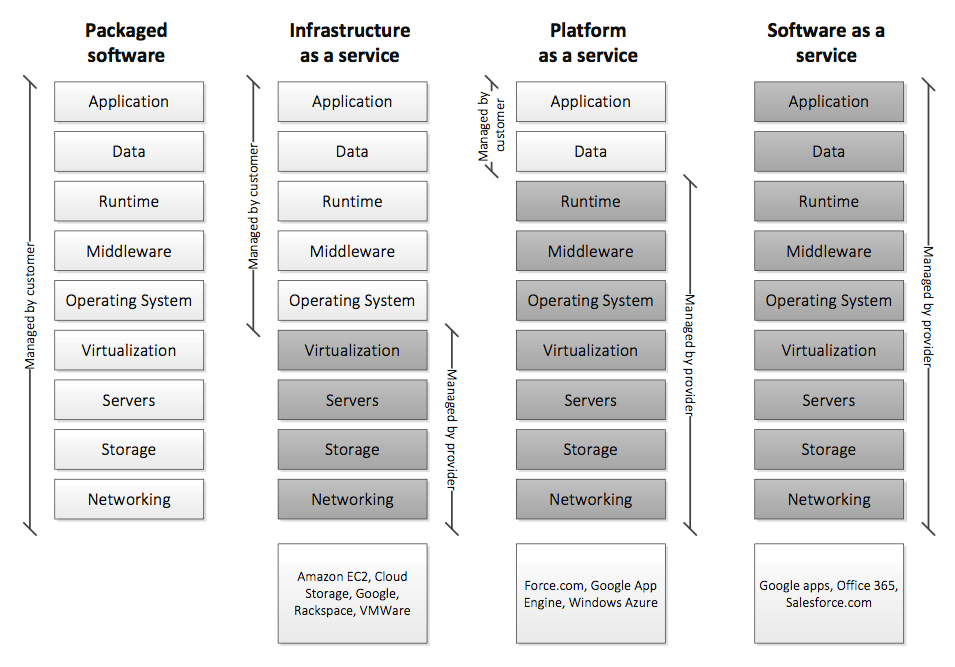
Computer networking has emerged as an important area of computing. It is so important in fact that you could take a whole sequence of college courses on the topic. For this reason, in this section we focus only on a few central concepts and vocabulary that will be useful to you in your career. While we try as much as possible to limit the jargon, computer networking is one of those topics where it is critical to be well versed in the language. Without a mastery of common vocabulary, you will be quickly cut out from any conversation on the topic.
The term network of course has a meaning that goes beyond computing. A network is a collection of interconnected nodes. Just looking around you can find many examples of networks. You, for example, have a family network, a social network of friends, a professional network of fellow students and co-workers. In all of these examples, people are the nodes of the network. The interstate highway system is a collection of cities (the nodes) connected by roads, and the fax network is a collection of analog fax machines (the nodes) connected by telephone lines made of copper wires.
A digital computer network is a special kind of network. It is a collection of digital computers connected through communication channels. Communication on a computer network occurs when a sender directs a message through a channel to a receiver using a shared language to encode the message and a communication protocol to route the message and ensure its successful delivery. That is a jam-packed sentence right there, but if we can successfully unpack it and understand each element, it will give you a solid understanding of computer networking. Let’s do it:
A computer network is designed to enable communication between digital computers. Thus, in this specific context the sender is a software program, whether a client or a server, originating a message. The message, which we defined as a unit of information, can take as many different forms as there are software programs. Think about the various applications you use every day that deliver messages and think about what the unit of information would be for each of them. In some cases, this is straightforward. For example, an email message is the unit of information for Microsoft Outlook. A text message is the unit of information for Apple iMessage. An image with descriptive tags is the unit of information for Instagram. In some other cases, it is a bit more difficult to give a definite answer. What is the unit of information for Pandora, the music streaming service? What is the unit of information for a hotel reservation system, or for Netflix, or for a Tesla car? What constitutes a message will vary from program to program, based on the specifications agreed upon by the designers of those programs. For simplicity, you can think of any discrete unit of information that is “meaningful” to a software program, as a message.
Messages travel through a communication channel. These channels are implemented using communication media. Just like we saw with hardware, computer engineers utilize different physical media to implement components of a system. For example, you are familiar with secondary storage implemented on magnetic media (e.g., magnetic tapes and floppy disks), optical media (e.g., CDs and DVDs) as well as solid-state media (e.g., flash memory). The same applies to communication media, which can be broadly classified as wired or wireless.
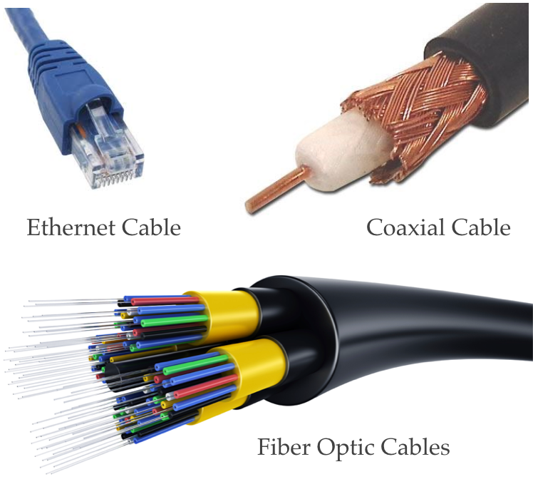
Wired media entail a physical connection, or link, between the sender and the receiver. In Local Area Networks (LAN) typical found in offices, these links are copper Ethernet cables. Your house most likely is wired using a coaxial cable, the same type of link used for cable TV. High throughput links, like the Internet backbone, are instead typically wired using fiber optic cables.
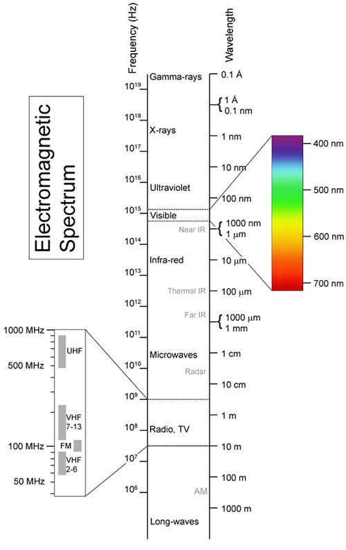
Wireless media entail no physical connection, and the links between sender and receiver are implemented through thin air… literally. Examples include infrared light, used for example by your remote to control the TV. And satellite communication as with the Global Positioning System (GPS). But the wireless media technologies you are most familiar with are surely the ubiquitous WiFi hot spots and cell towers. While WiFi and cell towers use different communication protocols, they both rely on the properties of electromagnetic waves. Electromagnetic waves can travel over distance and, for some of them, through objects! Electromagnetic waves travel at different frequencies in the electromagnetic spectrum and, importantly, they can be manipulated to carry analog and digital signals. Thus, they can be used as the channels of communication in which digital computer messages travel.
While we differentiate between wireless and wired media, there are plenty of hybrid arrangements. For example, when you download Instagram photos on your smartphone while in your car (that’s cool only if you are not driving!), you are using a wireless connection to reach a cell tower, which in turn is connected to the Internet backbone via fiber optics.
One final note about communication media: how is it possible for you to watch cable TV while surfing the internet at your house? After all, there is only one coaxial cable leaving your home. Well, this is another situation in computing when you have to think in terms of logical versus physical designs. Without going into too many details consider that each communication medium can use a range of frequencies within a given band to transmit a signal. You can see this in the figure where the FM radio signal you are quite familiar with transmits around the 100 MHz band. But as you know there are many radio stations in that band. For example, your favorite public radio station may transmit on the 89.3 MHz frequency while my favorite oldies station is on the 98.5 MHz (ok, please no jokes about the fact that I know the frequency of our local oldies station… 1990s rock and roll is considered oldies these days).
The available frequencies for transmission within a given band are the channels. You can think of each one as a logical (not physical) link that can carry information. So, it does not really matter that there is only one physical coaxial cable running to your house, as long as there are enough channels to carry all the data you need. The term bandwidth refers to the rate of data transfer of a communication channel. The measure of this rate of transfer, also called bit rate or throughput, is bits per second (bps). The same modifiers we used for storage capacity are used for bandwidth – thus we speak of Kilobps, Megabps, Gigabps, and so on when measuring the throughput of a digital communication channel.
The last of the concepts we introduced earlier is perhaps the most important: protocol. Protocol is again a term that is not exclusive to computing. When political dignitaries visit a different nation they generally follow the international diplomatic protocol. We have a protocol that we follow in class – at the most basic level we all wear clothes and arrive to class on time. But just like people in social networks, computers in digital communication networks need protocols. For computers, protocols are even more important than they are for humans, since machines cannot deal with ambiguity and uncertainty. The agreed upon set of rules that govern communication between digital computers must be very stringent and precise.
It is also important for you to recognize that there isn’t only one communication protocol but in fact a plethora of them. This is another area of computer networking where we could spend a lot of time covering the nuances of the many protocols and topologies of networks of the past. We could discuss the many approaches used in LANs over the years, such as IBM’s token ring, Apple’s AppleTalk, or many other approaches that took hold over time. But that would not be a good use of our time. Instead, we will discuss protocols in the context of the most important network of our time, the Internet.
Computer networking has emerged as an important area of computing. It is so important in fact that you could take a whole sequence of college courses on the topic. For this reason, in this section we focus only on a few central concepts and vocabulary that will be useful to you in your career. While we try as much as possible to limit the jargon, computer networking is one of those topics where it is critical to be well versed in the language. Without a mastery of common vocabulary, you will be quickly cut out from any conversation on the topic.
The term network of course has a meaning that goes beyond computing. A network is a collection of interconnected nodes. Just looking around you can find many examples of networks. You, for example, have a family network, a social network of friends, a professional network of fellow students and co-workers. In all of these examples, people are the nodes of the network. The interstate highway system is a collection of cities (the nodes) connected by roads, and the fax network is a collection of analog fax machines (the nodes) connected by telephone lines made of copper wires.
A digital computer network is a special kind of network. It is a collection of digital computers connected through communication channels. Communication on a computer network occurs when a sender directs a message through a channel to a receiver using a shared language to encode the message and a communication protocol to route the message and ensure its successful delivery. That is a jam-packed sentence right there, but if we can successfully unpack it and understand each element, it will give you a solid understanding of computer networking. Let’s do it:
A computer network is designed to enable communication between digital computers. Thus, in this specific context the sender is a software program, whether a client or a server, originating a message. The message, which we defined as a unit of information, can take as many different forms as there are software programs. Think about the various applications you use every day that deliver messages and think about what the unit of information would be for each of them. In some cases, this is straightforward. For example, an email message is the unit of information for Microsoft Outlook. A text message is the unit of information for Apple iMessage. An image with descriptive tags is the unit of information for Instagram. In some other cases, it is a bit more difficult to give a definite answer. What is the unit of information for Pandora, the music streaming service? What is the unit of information for a hotel reservation system, or for Netflix, or for a Tesla car? What constitutes a message will vary from program to program, based on the specifications agreed upon by the designers of those programs. For simplicity, you can think of any discrete unit of information that is “meaningful” to a software program, as a message.
Messages travel through a communication channel. These channels are implemented using communication media. Just like we saw with hardware, computer engineers utilize different physical media to implement components of a system. For example, you are familiar with secondary storage implemented on magnetic media (e.g., magnetic tapes and floppy disks), optical media (e.g., CDs and DVDs) as well as solid-state media (e.g., flash memory). The same applies to communication media, which can be broadly classified as wired or wireless.
Wired media entail a physical connection, or link, between the sender and the receiver. In Local Area Networks (LAN) typical found in offices, these links are copper Ethernet cables. Your house most likely is wired using a coaxial cable, the same type of link used for cable TV. High throughput links, like the Internet backbone, are instead typically wired using fiber optic cables.
Wireless media entail no physical connection, and the links between sender and receiver are implemented through thin air… literally. Examples include infrared light, used for example by your remote to control the TV. And satellite communication as with the Global Positioning System (GPS). But the wireless media technologies you are most familiar with are surely the ubiquitous WiFi hot spots and cell towers. While WiFi and cell towers use different communication protocols, they both rely on the properties of electromagnetic waves. Electromagnetic waves can travel over distance and, for some of them, through objects! Electromagnetic waves travel at different frequencies in the electromagnetic spectrum and, importantly, they can be manipulated to carry analog and digital signals. Thus, they can be used as the channels of communication in which digital computer messages travel.
While we differentiate between wireless and wired media, there are plenty of hybrid arrangements. For example, when you download Instagram photos on your smartphone while in your car (that’s cool only if you are not driving!), you are using a wireless connection to reach a cell tower, which in turn is connected to the Internet backbone via fiber optics.
One final note about communication media: how is it possible for you to watch cable TV while surfing the internet at your house? After all, there is only one coaxial cable leaving your home. Well, this is another situation in computing when you have to think in terms of logical versus physical designs. Without going into too many details consider that each communication medium can use a range of frequencies within a given band to transmit a signal. You can see this in the figure where the FM radio signal you are quite familiar with transmits around the 100 MHz band. But as you know there are many radio stations in that band. For example, your favorite public radio station may transmit on the 89.3 MHz frequency while my favorite oldies station is on the 98.5 MHz (ok, please no jokes about the fact that I know the frequency of our local oldies station… 1990s rock and roll is considered oldies these days).
The available frequencies for transmission within a given band are the channels. You can think of each one as a logical (not physical) link that can carry information. So, it does not really matter that there is only one physical coaxial cable running to your house, as long as there are enough channels to carry all the data you need. The term bandwidth refers to the rate of data transfer of a communication channel. The measure of this rate of transfer, also called bit rate or throughput, is bits per second (bps). The same modifiers we used for storage capacity are used for bandwidth – thus we speak of Kilobps, Megabps, Gigabps, and so on when measuring the throughput of a digital communication channel.
The last of the concepts we introduced earlier is perhaps the most important: protocol. Protocol is again a term that is not exclusive to computing. When political dignitaries visit a different nation they generally follow the international diplomatic protocol. We have a protocol that we follow in class – at the most basic level we all wear clothes and arrive to class on time. But just like people in social networks, computers in digital communication networks need protocols. For computers, protocols are even more important than they are for humans, since machines cannot deal with ambiguity and uncertainty. The agreed upon set of rules that govern communication between digital computers must be very stringent and precise.
It is also important for you to recognize that there isn’t only one communication protocol but in fact a plethora of them. This is another area of computer networking where we could spend a lot of time covering the nuances of the many protocols and topologies of networks of the past. We could discuss the many approaches used in LANs over the years, such as IBM’s token ring, Apple’s AppleTalk, or many other approaches that took hold over time. But that would not be a good use of our time. Instead, we will discuss protocols in the context of the most important network of our time, the Internet.
There is a stack (or suite) of protocols that enable digital communication over the Internet. Discussing how they operate to enable your daily web surfing, messaging, youTubing, Instagramming and the like is not only valuable so that you know what you are doing. But it is also a good illustrative example to understand how digital communication protocols work.
We have yet to formally define what the Internet is (spoiler alert! It is a network of networks spanning the globe). But you have a clear sense of what you can do on the Internet from your personal experience. How can globally dispersed computing devices communicate reliably? The ultimate goal of computer networking is to enable a given software application on one node to be able to exchange messages with compatible software applications on a remote node. An example is when you use Gmail on your smartphone to send me an email as I am traveling through Spain. I receive and read that email on my Mac using the application called Apple Mail. How does this process work?
Packet Switching
Have you ever wondered how the telephone works? No, not your smartphone! We already established in earlier chapters that that’s not a phone but rather a digital computer. I am talking about a traditional phone. A traditional phone relied on analog signals, continuous time varying signals that represented the sender’s voice. Thus, the sound waves generated by your voice, as captured by the microphone of your headset, would travel through the wires and be rendered as analogous vibrations by the speaker of the recipient’s phone. But how was the call routed? A dedicated circuit would have to be created between your phone and the recipient’s phone, a method called circuit switching. Early on, this was a manual process carried out by people, called telephone operators, housed in special offices called private branch exchanges. You may have seen this in old movies or black and white images from the 1950s. These jobs disappeared when telephone companies invented automated switches, but the end result did not change much. You still needed a dedicated channel connecting sender and receiver. This is actually an acceptable approach for point-to-point voice communication, since there is very little idle time on the line during a verbal conversation. At the end of the conversation you would simply replace the receiver and free up the channel for some other call.
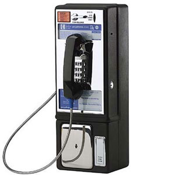
But what about digital communication? And more specifically digital data transfer on a computer network? Would circuit switching be an efficient approach? The answer is no, and the reason is that digital communication is “bursty” rather than continuous. To convince yourself of this fact, just imagine the data transfer occurring behind the scenes when you navigate the Web. There is a burst of data transfer when the client (i.e., your browser) requests the page and another when the server delivers it. Then there will be some idle time while you read the content, followed by another set of bursts when you click on a link. Tying up a channel for the time it takes you to read the page is inefficient. In fact, it is even inefficient to occupy the channel during the transmission of the web page. A better solution is packet switching.
In a packet switching system the message is divided into packets of standard size and standard configuration. Thus, to one message (e.g., an email) will correspond many packets. The current packet routing protocol on the Internet, IPv6, specifies a payload of about 65 kilobytes. If you think that this chapter I am writing is already 4.5 megabytes in size, you will see that if I were to send it to you as an email attachment, my email message would result in upwards of 70 packets.
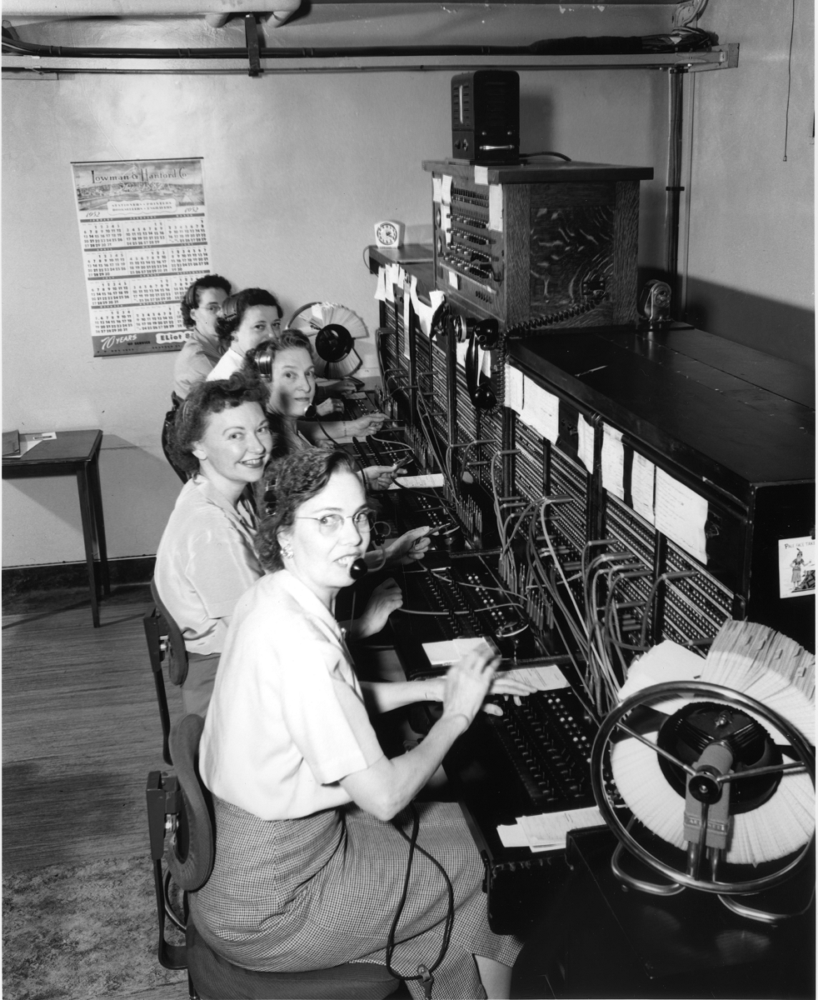
By design each packet is self-contained and independent. That is, packets carry part of the original message (i.e., data) but they also have a header with addressing information and sequencing information. More specifically, each packet contains the sender and receiver addresses as well as information about the packet’s position in the original message and many other control fields. This header information is needed to route the packet, to make sure it reaches the receiver, and to meaningfully reconstruct the original message once all packets have arrived at destination. The fact that packets are self-contained and independent is critical. It means that each packet can take a different route from sender to receiver. Thus, instead of tying up a channel for the duration of the communication, as in circuit switching, at each routing station on the way from sender to receiver, each packet follows the optimal route at that time. Moreover, if a packet is lost in transit there is no need to resend the whole message. The receiver can request just the missing packet.
TCP/IP
The TCP/IP protocol suite governs data transmission on the Internet. Early in the development of TCP/IP the designers introduced the principles of encapsulation and layering to simplify complex end-to-end transmission. Instead of trying to design a single monolithic protocol, they opted for using multiple layers, or stack as it is called today, of independent protocols. With encapsulation, each upper layer in a transmission could access only what was needed from the lower layer. The most important layers of the TCP/IP protocol stack are described below:
Routing
Another one of the original design principles of the Internet was the end-to-end principle. According to this principle “intelligence” should be located at the edges of the network with communication equipment between nodes only responsible for routing packets. One of the reasons behind this principle was the need for network resilience, such that if failure occurred anywhere on the network communication could automatically route around the problem, and scalability, such that any network or node could be easily added to the Internet as long as it subscribed to the TCP/IP protocol.
A key element of this design was the router. A modern router is a networking device that forwards packets it receives based on a map of the network called a routing table. While modern routers are very sophisticated and engage in substantial network traffic optimization, the minimal requirement for a router is the ability to receive and forward packets.
To understand routing let’s discuss the addressing mechanisms of the IPv4 Internet Protocol. While IPv6 has superseded IPv4 since its launch in June 2012, the two are conceptually similar and IPv4 makes the explanation simpler. IPv4 identifies a unique node on the network with an IP address of four bytes, called octets in this context. For simplicity, each of the four bytes would be represented in its decimal form which is much more memorable to humans. Thus, an IP address is a sequence of four numbers, ranging each from 0 to 255, separated by a dot. For example: 172.217.12.46. By using 32 total bits to represent a unique address, IPv4 provided about 4.29 billion unique addresses. As a testament to the wild success of the Internet however, these were going to run out a few years ago! That’s when IPv6 was introduced. It uses 128 bit for each unique address –that’s 340,282,366,920,938,000,000,000,000,000,000,000,000 possible unique addresses. We are not going to run out of them any time soon, even though the number and range of devices that are getting connected is mindboggling. My recent favorites are Internet connected lights from Phillips Hue, the Bluesmartautotracking connected luggage, and an Internet connected crockpot that you can turn on to warm up your chili as you leave your office from home… I know, you can’t make this stuff up!!
Try typing http://172.217.12.46 in your browser. What happens? Well, first of all you get a web page, which confirms that you can use an IP address as a routing mechanism. Moreover, you should get the same outcome from typing http://www.google.com/ - confirming that the two are indeed equivalent. The latter is a Uniform Resource Locator (URL), a human readable reference to a remote network node or resource. When you refer to a remote resource on the network by its URL, this human readable address is resolved by querying a Domain Name Server (DNS). The DNS translates the URL into the corresponding IP address enabling communication to start as described above.
Let’s dissect a URL and extract its element. The exercise is very informative. Take for example: http://mail.google.com/mail/#inbox/15a4810f25ed6315. This URL is pointing to an email message in my inbox in Gmail. I am accessing it on Google Chrome, a web browser, rather than a dedicated email client. Here are the elements of the URL:
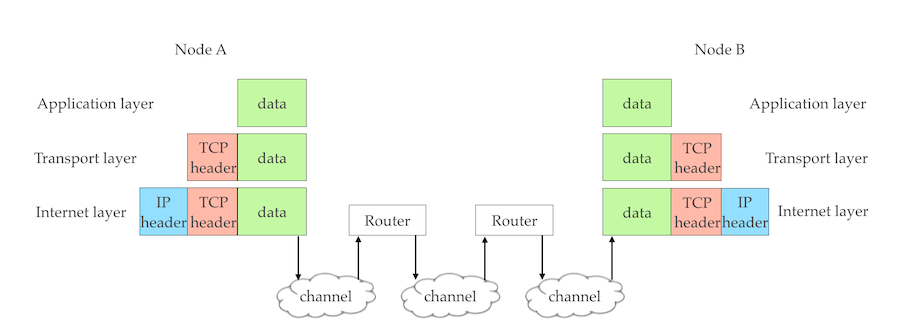
If we return to the earlier example it should now be clear how that email you sent with your smartphone will reach me all the way to Spain. The application layer, following the SMTP protocol, encapsulates your message, from start to finish ensuring that you use the correct email address identifying the user (i.e., writer) and the domain (i.e., reimage-it.com). The message is encapsulated by the TCP protocol and then the message is divided into packets, each one with its IP address. Routers along the way forward each packet until they reach the receiving node on the network. As the Internet layer receives the packets they are passed up the stack to the transport layer. There the TCP protocol ensures that the original message can be reconstructed and there are no missing packets. At this point the data is passed up to the application layer where, following the SMTP protocol, my email client interprets the message as a new email from you and displays it accordingly. I smile, as I am always happy to receive messages from my readers. For a visual and comprehensive view of the topic of this chapter, view the following video.
A book chapter on computer networking must devote a special section to the Internet, an invention that has truly revolutionized the world. A brief look at any information systems textbook quickly reveals that the Internet is, simply put, “a network of networks.” In other words, the Internet is broadly defined as a collection of networked computers that can “talk to one another.” This simple definition points to a fundamental issue: The Internet is an infrastructure upon which services—such as e-mail, the web, instant messaging (IM), and many others—are delivered.
Wikipedia, the free, web-based encyclopedia, provides a more complete definition:
The Internet is a global system of interconnected computer networks that use the Internet protocol suite (TCP/IP) to link several billion devices worldwide. It is a network of networks that consists of millions of private, public, academic, business, and government networks of local to global scope, linked by a broad array of electronic, wireless, and optical networking technologies. The Internet carries an extensive range of information resources and services, such as mobile apps including social media apps, the inter-linked hypertext documents and applications of the World Wide Web (WWW), electronic mail, multiplayer online games, telephony, and peer-to-peer networks for file sharing.
From this definition follow several observations, but before discussing them, you should carefully note that the definition of the Internet is very general and “device agnostic.” In other words, as a collection of computer networks, the Internet can connect any device based on the digital computer architecture—such as a laptop, a smartphone, a face-recognition digital camera, and so on. Today there are more devices connected to the Internet than there are people with access, and analysts predict that by the end of this decade, Internet-connected devices will outnumber humans by four to one. The extreme flexibility of the Internet protocol (as we saw earlier) is what allows such scalability and variety of devices. Note as well that the general definition above does not restrict the type of channel connecting these digital devices across the Internet. In other words, if you are imagining an Internet made of computers and cables, you should revise this mental picture, because the channels are increasingly wireless—using radio signals, satellites, or cellular technology.
The following video features one of the pioneers of the Internet and its protocols, it is well worth watching.
Internet Services
As the Wikipedia definition suggests, the nodes of the Internet “carry an extensive range of information resources and services.” A common misconception is that the terms Internet and World Wide Web (or web) are synonymous. This is incorrect, and it is important to differentiate the two. The Internet is the infrastructure upon which many services are made available. Typically, you will connect to the Internet, the infrastructure, to access the services you want to use (e.g., email).
The World Wide Web (or the Web) is a service available on the Internet and, alongside electronic mail, it is the most popular.
Distributed Ownership
The Internet is “publicly accessible,” meaning that no single entity owns it, regulates its use, or otherwise controls it. In fact, the Internet has many owners but no one who centrally controls it. In other words, different portions of the Internet (i.e., different networks connected to other networks) are owned by different entities—literally millions of them. For example, your university network, while connected to the public Internet, is privately owned by your university. Your university manages and pays for it. Similarly, if you decide to launch your start-up upon graduation and need it to have a web presence, you may decide to run your own infrastructure rather than purchase it as a cloud-based service. In this case, you would maintain your own web server and your own dedicated connection to the Internet, thus becoming one of the many entities owning a small piece of the global network. Distributed ownership has been perhaps the main strength of the Internet, limiting regulation, fostering experimentation, and ensuring widespread access leading to significant growth.
Multiplicity of Devices
The Internet is a digital network consisting of millions of smaller digital networks. Each of these smaller digital networks encompasses a collection of digital devices, called nodes. The simplest digital network to visualize is perhaps a home network. Your home network may be composed of a couple of personal computers and a printer to which both computers can send documents. Using a home router, wired or wireless, and a broadband modem (e.g., cable, fiber, or DSL), you connect to the Internet. Each of these digital devices—the two computers, the printer, and the router—are nodes on your home network.
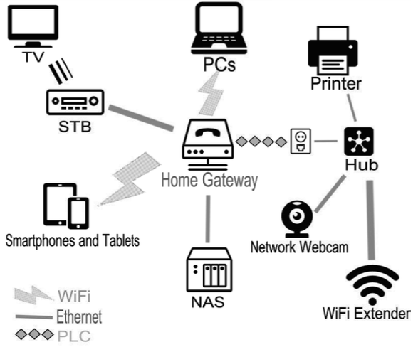
Your home network is a tiny contributor to the larger Internet. The fancier ones among us may have more cutting-edge devices, such as a connected thermostat for resucing the energy bill, a wireless media center to stream music and videos from a computer through the living room stereo, a wireless web cam to monitor the front door, a couple of tablets, and even cooler stuff! A connected car—equipped with a GPS device, the OnStar system, or a permanent Internet connection—is another example of a networked node, as is a modern smartphone. As the price of microchips and bandwidth keeps dropping, the number and type of devices that become nodes of a network will continue to increase. In other words, the Internet is in continuous expansion.
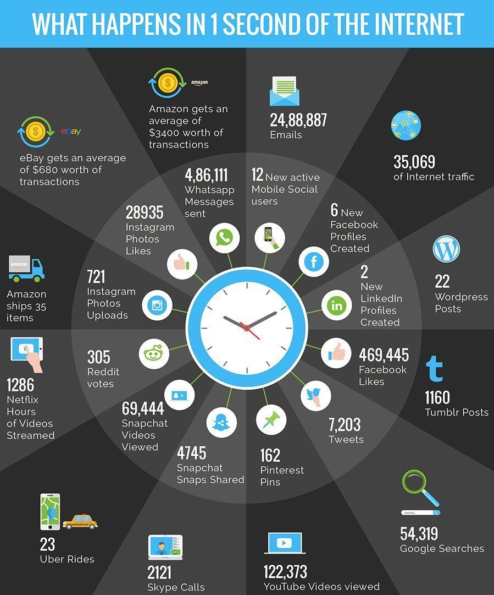
Open Standards
The Internet relies on open technology standards and protocols. As you know a protocol is an agreed-upon set of rules or conventions governing communication among the elements of a network (i.e., network nodes). On the Internet, such a set of rules is the TCP/IP protocol mentioned in the Wikipedia definition. Nobody owns the TCP/IP protocol; as such, it is an open (i.e., freely available) standard, as opposed to a proprietary one. The same holds true for the other technologies that enable the Internet and its services, such as HTML (the language used to write web pages). While there are standard-setting bodies that decide how each of these technologies should evolve (in the case of HTML, it is the World Wide Web Consortium, or W3C), no entity can charge for their use. Thus, anyone who wants to embed support for these standards in his or her applications can do so . . . and innovation continues to thrive on the Internet!